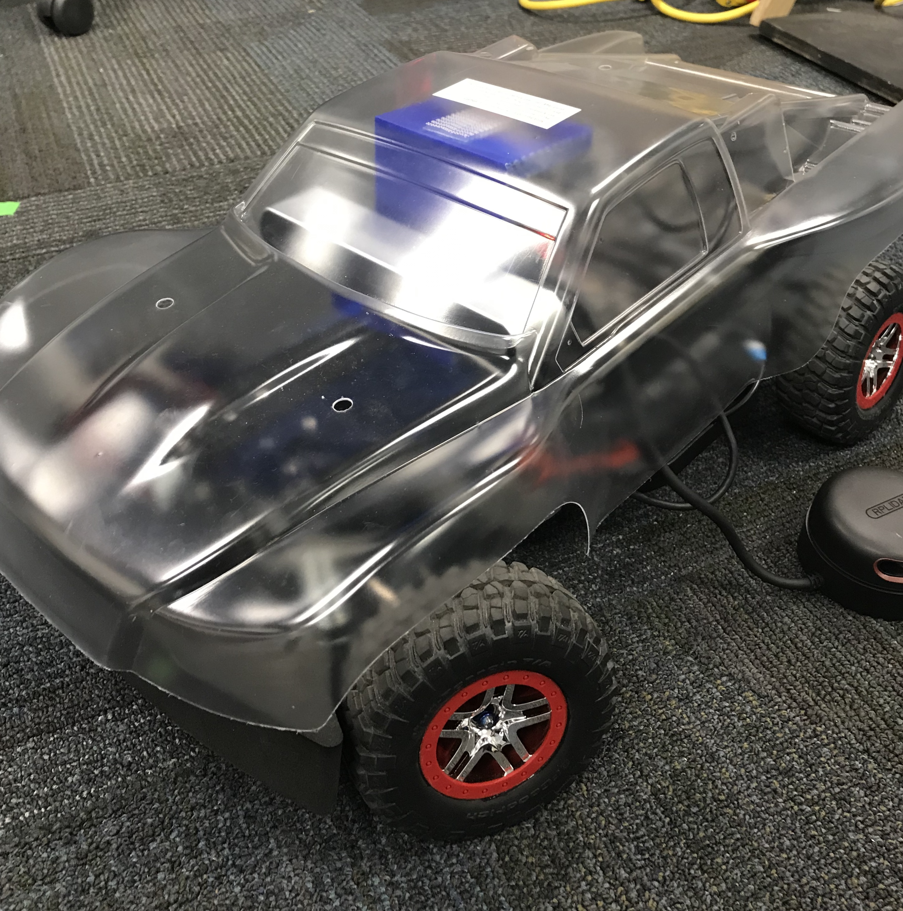
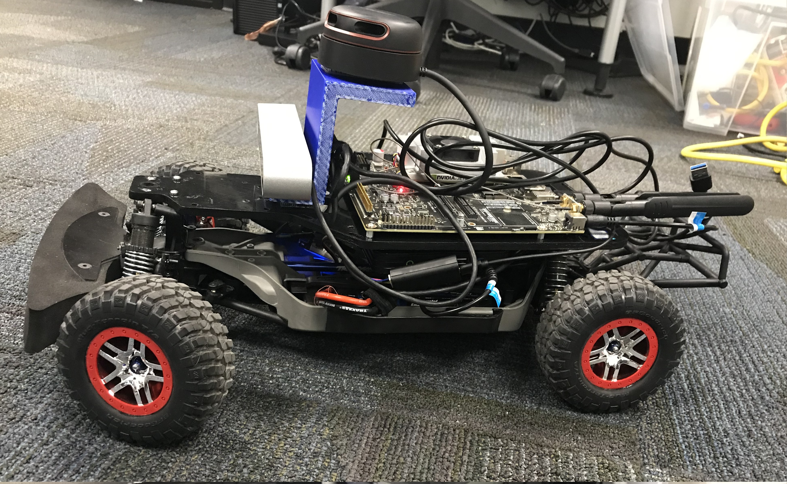
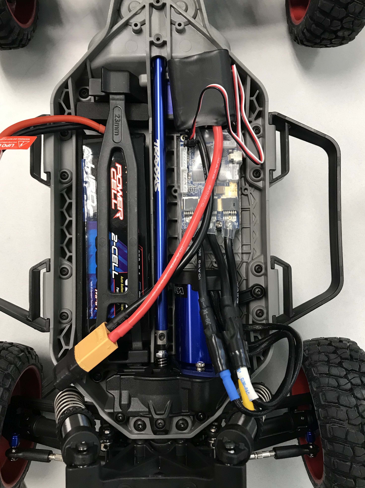
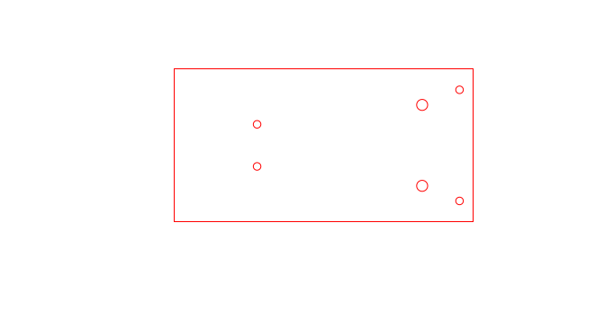
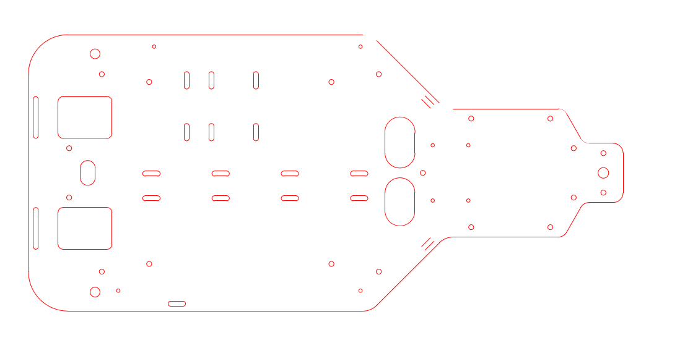
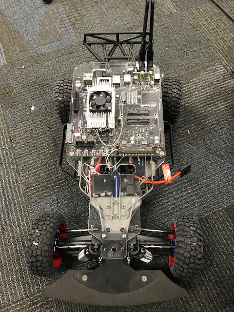

Updated design

Hardware design
Our car is based on mit-racecar project but I had to optimize the design because I need to enclose the skeleton into the body to look like a real car. This makes the task of computer vision algorithm easier as the noise from the sensor lights and cable orientations can be avoided by using the body. To place the body I had to remove the second rack in the design of mit-racecar, then I also wanted to place the lidar on the top of the car which will resemble the current self-driving cars and will have a much better view at the environment. My final design would include mounting lidar on the of the top of the body and camera inside the body in front of the windscreen. Final car with the body should something like the image below.

For now, I have designed a 3-d model which would resemble the lidar and camera placement until I fix the body. Below is the image of the updated design.

As we are using a different VESC, I laser cut an acrylic part to mount the vesc on to the Traxxas base. It can be seen the image below.
 
There are one micro USB and one USB 3.0 on the TX2 board. I planned to not use the USB 3.0 extension hub used in mit-racecar design which is bulky and also need a power source. Now, I can only hook the camera to the USB 3.0 and lidar to the micro USB which leaves no space for the VESC and IMU for a USB connection. I choose to use the UART and GPIO pins on TX2 for the VESC and IMU connection which I will explain in a different post.
I had to change the orientation of the tx2 in the base design of the mit-racecar, with that now the antenna and USB cables are pointing backside which makes fitting the body easy. I also have a cool idea to stick the antennas on the back of the body.
 
Please click on the image below for the video. In the video I have used BLDC_tool from Vedder, to set constant steering angle and throttle values to make the car move in circles.